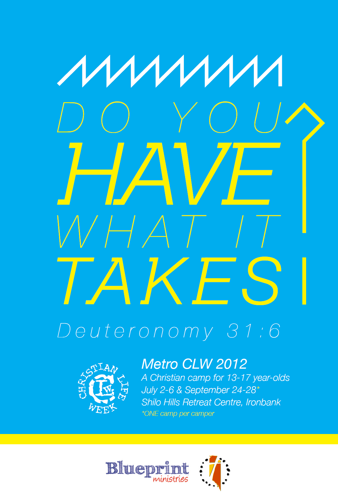

QuestAns
QuestAnsOur camp theme this year is “Do you Have what it takes?”
This theme is derived from a study by Francis Chan, entitled Courage. We want to encourage campers to live lives fearlessly; knowing that in every situation, God is with us.
The
theme text is Deuteronomy 31:6 (NKJV)-
“Be strong and of good courage, do not fear nor be afraid of them; for the Lord your God, He is the One who goes with you. He will not leave you nor forsake you.”
Christian Life Week is a perfect opportunity to discuss what it means to live as a Christian; particularly as we live in a world where, increasingly, Christianity is becoming a rarer and less popular belief. For young people especially, living as a Christian is difficult in our current climate, and we want to help encourage, uplift, invigorate and inspire our campers to live fearless, Godly lives.
QuestAns